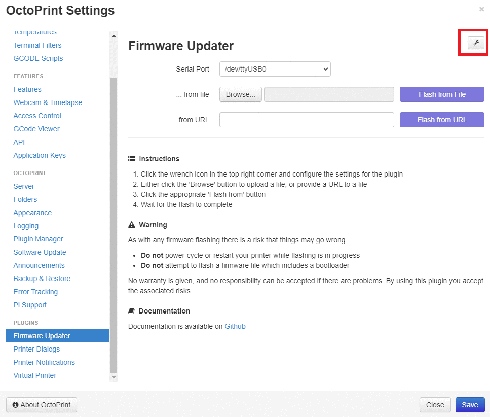

So I went and bought and Ender5 Pro to learn how to 3d-print stuff.
Unfortunately my bed (the thing you print on) is warped, which leads to bad print results. The printer expects the bed to be without curvature and to have an even distance to the extruder. For me and many other owners of Ender5 (Pro), the stock bed has slightly raised edges (or a lower center).
Most videos and guides for how to deal with this on the internet just says to perform Mesh bed leveling.
Unfortunately the stock firmware is old and does not contain this feature, so we need to build our own.
The stock firmware version for me was 1.1.6.3, but I'm building version 2.0.7.2.
- The stock firmware is called Marlin
- The control board we flash is called Melzi. The actual board seems to be a Creality-specific version as it looks different from what is on that wiki. (mine is version 1.1.5, which is printed on the PCB)
- I'm using PlatformIO to build the FW
- Using an OctoPi with the Firmware updater plugin
- This also requires you to install
avrdudewithsudo apt-get install avrdude(on the octopi)
- This also requires you to install
I downloaded the 2.0.x sources from this site and decided to do a command-line build with PlatformIO instead of the more common vscode/arduino-studio-alternatives. First I started with arduino studio through Darduino but clicking interfaces blindly is not my style, so I adapted the dockerfile and shell-script for PlatformIO instead. You can find my modified files at the end of this post.
When the docker is built and running, we need to configure the firmware for the board.
Download a pair of "standard" Ender5 Pro config files from github and put into the Marlin directory (overwrite/replace the existing Configuration.h and Configuration_adv.h).
Then browse to the Marlin root directory (which contains platformio.ini) and run platformio run -e melzi_optimized to build the firmware.
The resulting hex-file can be found in ./.pio/build/melzi_optimized/firmware.hex and is needed for OctoPi.
The OctoPi-plugin needs to be configured with the right programmer and CPU.

Then you just select the hex-file and flash. Wooh!
Before I started hacking with mesh bed leveling configuration, I made sure to verify that this flashed and ran properly.
Then we just have to configure the firmware for our usecase. G29 - Bed Leveling documentation goes into details about different schemes, how to configure them, and how to use them.
I've decided to go for manual bed leveling, with 5x5 measurement points, and LCD menu to help out measurements.
#define MESH_BED_LEVELING#define RESTORE_LEVELING_AFTER_G28to not loose config after auto-home#define GRID_MAX_POINTS_X 5inside the proper ifdef#define LCD_BED_LEVELING
But unfortunately this makes the firmware to large. We need to remove some features to make it small enough for our needs.
Teaching Tech details some thins to turn off in this video about BLTouch in Ender3. Great videos, but I want data easily accessible so I'm listing what can be configured here:
#define SPEAKER- Not removed#define SHOW_BOOTSCREEN- Removed#define ARC_SUPPORTinCondifuration_adv.h- Not removed, non-linear movements are cool AF#define DISABLE_M503- Already removed#define EEPROM_CHITCHAT- Not removed#define SLIM_LCD_MENUS- Enabled
After having flashed this I preheated for PLA(Cause temperature and size) and performed "manual" leveling of the bed, in an attempt to orient the bed before doing mesh leveling.
Then I did a leveling using the LCD and boy is the bed not level!
After storing the settings I ran G29 S0 via OctoPi to get a printout of the measured bed values.
This will enable me to quickly restore them, should I need to wipe EEPROM sometime.
Send: G29 S0
Recv: Mesh Bed Leveling OFF
Recv: 5x5 mesh. Z offset: 0.00000
Recv: Measured points:
Recv: 0 1 2 3 4
Recv: 0 -0.07500 -0.12500 -0.12500 -0.12500 -0.02500
Recv: 1 -0.07500 -0.12500 -0.12500 -0.12500 -0.02500
Recv: 2 -0.07500 -0.12500 -0.15000 -0.12500 -0.00000
Recv: 3 -0.05000 -0.15000 -0.17500 -0.15000 -0.02500
Recv: 4 -0.05000 -0.17500 -0.22500 -0.20000 -0.05000
Recv:
Recv: X:220.00 Y:220.00 Z:0.00 E:0.00 Count X:17600 Y:17600 Z:0
Recv: ok
Ayy lmao no wonder my initial prints didn't look too good.
Dockerfile
FROM ubuntu:16.04
ENV HOME /home/developer
WORKDIR /home/developer
# Replace 1000 with your user / group id
RUN export uid=1000 gid=1000 && \
mkdir -p /home/developer && \
mkdir -p /etc/sudoers.d && \
echo "developer:x:${uid}:${gid}:Developer,,,:/home/developer:/bin/bash" >> /etc/passwd && \
echo "developer:x:${uid}:" >> /etc/group && \
echo "developer ALL=(ALL) NOPASSWD: ALL" > /etc/sudoers.d/developer && \
chmod 0440 /etc/sudoers.d/developer && \
chown ${uid}:${gid} -R /home/developer && \
apt-get update \
&& apt-get install -y \
software-properties-common
RUN apt install -y python3-pip python3-tk
RUN pip3 install -U platformio
ENV LC_ALL C.UTF-8
ENV LANG C.UTF-8
ENV DISPLAY :1.0
USER developer
platformio.sh
#!/bin/bash
docker build -t yolo:yeet . && \
docker run \
-it \
--rm \
-e DISPLAY=$DISPLAY \
-v /tmp/.X11-unix:/tmp/.X11-unix \
-v /dev:/dev \
-v $HOME/topics:/topics \
-v $HOME/topics/platformio:/home/developer/platformio \
--name platformio \
yolo:yeet
Other sources:
Chronological (or something ¯\_(ツ)_/¯ )
- Next: Bed level script
- Prev: Windows Container notes
- Next: Bed level script
- Prev: Windows Container notes